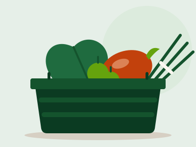
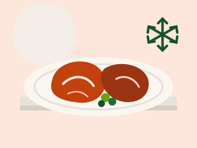
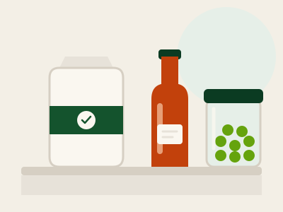
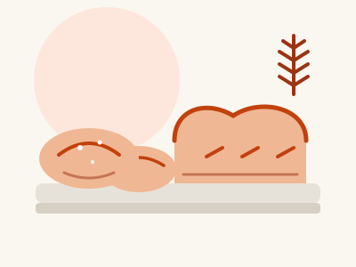
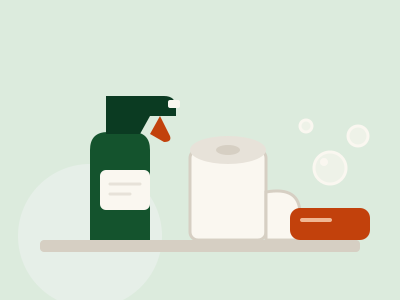

Departments
Six departments, one standard
What is on the shelf changes with the season. What does not change: fresh first, and the shelf price is the till price.

Fresh produce
Local first: bodi, pimentos, dasheen, Julie mangoes and whatever the Debe and Penal farms brought in this morning.
- Deliveries land before 7:00 am from farms around Debe, Penal and Moruga.
- Bodi, ochro, pimentos, seasoning peppers, dasheen, eddoes and cassava most days; Julie and Starch mangoes in season.
- Weighed at the till, so you pay for what is in the bag and nothing else.
- If it would not go in our own kitchens, it comes off the shelf.

Meats & frozen
Fresh chicken, beef and goat cut to order at the counter, halal options, and a frozen range that stays frozen all the way to your car.
- Chicken, beef, goat and pork cut to order at the counter; halal options are marked.
- Ask for stew cut, curry cut or whole. We trim and bag it while you wait.
- The frozen range is held at −18 °C and the temperature is logged every shift.
- Cold items are bagged together so they stay frozen to your car.

Grocery & pantry
Rice, peas, channa, oils and seasonings in family sizes and bulk bags. Shelf prices that match the shelf tag.
- Rice, split peas, channa, red beans and flour in family packs and in 10 kg and 45 kg bags.
- Cooking oil, sugar, salt and seasonings in trade sizes, at the same price in every branch.
- The shelf tag and the till price match. If they ever differ, you pay the lower one.
- Local brands first wherever a local brand exists.

Bakery
Hops bread from 6:30 am, coconut sweetbread, currants roll and whole-wheat loaves baked in-store at San Fernando and Princes Town.
- Hops bread comes out of the oven from 6:30 am at San Fernando and Princes Town.
- Coconut sweetbread, currants roll, cassava pone and whole-wheat loaves through the day.
- Order cakes and bulk bread for a function two days ahead at the bakery counter.
- Everything is baked in-store. Nothing arrives frozen and reheated.

Household
Cleaning, paper goods and the everyday things you forgot you needed, at the same price in every branch.
- Cleaning products, paper goods, bulbs, batteries and bin bags.
- The same price in every branch, every day.
- Bulk packs of paper towel and detergent for homes and small businesses.
Bulk & wholesale
Case and pallet pricing for shops, restaurants and caterers, with a trade desk at Princes Town.
- Case and pallet pricing on rice, peas, beans, oil, flour and paper goods.
- Fresh and frozen meats by the case; produce in field crates for restaurants and caterers.
- Trade desk at Princes Town, Monday to Saturday, with delivery across the south.
- Enquire about a trade account and the trade desk calls you back.